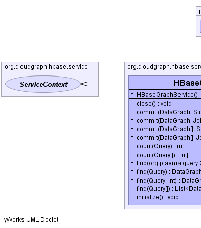
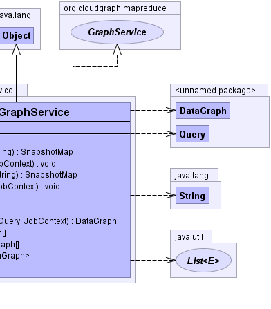

public class HBaseGraphService extends java.lang.Object implements GraphService
DataAccessService interface
and delegating to GraphQuery for serving data from HBase back to the
client, and GraphDispatcher for propagating changes to one or more
data graphs back to HBase.
CloudGraph™ is based on the Service Data Objects (SDO) 2.1 specification and is designed as a suite of SDO Data Access Services (DAS) under the PlasmaSDO™ Service Data Objects implementation.
Typical CRUD operations are provided across any full or partial data graph, and any "slice" of a graph or set of sub-graph slices can be returned using common SDO query mechanisms including XPath and others.
org.plasma.sdo.access.DataAccessService,
GraphQuery,
GraphDispatcher|  |  |
| Constructor and Description |
|---|
HBaseGraphService() |
| Modifier and Type | Method and Description |
|---|---|
void |
close() |
void |
commit(DataGraph[] graphs,
JobContext context) |
SnapshotMap |
commit(DataGraph[] dataGraphs,
java.lang.String username) |
void |
commit(DataGraph graph,
JobContext context) |
SnapshotMap |
commit(DataGraph dataGraph,
java.lang.String username) |
int |
count(Query query) |
int[] |
count(Query[] queries) |
DataGraph[] |
find(org.plasma.query.Query query,
JobContext context) |
DataGraph[] |
find(Query query) |
java.util.List<DataGraph[]> |
find(Query[] queries) |
DataGraph[] |
find(Query query,
int maxResults) |
void |
initialize() |
public void initialize()
public void close()
public int count(Query query)
public int[] count(Query[] queries)
public DataGraph[] find(Query query)
public DataGraph[] find(Query query,
int maxResults)
find in interface GraphAccessorpublic java.util.List<DataGraph[]> find(Query[] queries)
public SnapshotMap commit(DataGraph dataGraph,
java.lang.String username)
commit in interface GraphMutatorpublic SnapshotMap commit(DataGraph[] dataGraphs,
java.lang.String username)
commit in interface GraphMutatorpublic DataGraph[] find(org.plasma.query.Query query,
JobContext context)
throws java.io.IOException
find in interface GraphAccessorjava.io.IOExceptionpublic void commit(DataGraph graph,
JobContext context)
throws java.io.IOException
commit in interface GraphMutatorjava.io.IOExceptionpublic void commit(DataGraph[] graphs,
JobContext context)
throws java.io.IOException
commit in interface GraphMutatorjava.io.IOExceptionCloudGraph® is a registered trademark of TerraMeta Software, Inc. Copyright © 2014 - All Rights Reserved.